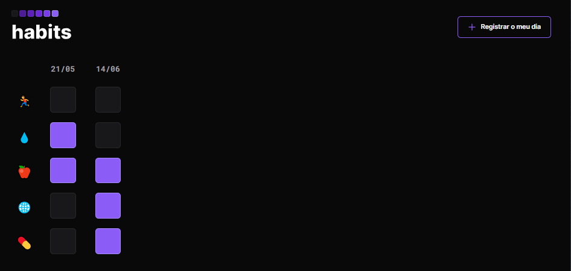

NLW - Rocketseat
Registro de Hábitos.

Neste projeto, você pode registrar alguns hábitos que foram
disponibilizados de forma a serem os mais comuns no dia a dia, eles
são: atividade fisica, hidratação, alimentação, estudos e
remédios.Neste projeto foi utilizado as seguintes tecnologias: html,
css e javascript.
Udemy
Página Web
Este projeto foi criado com objetivo de ser uma pagina web de uma
financeira, onde os usuarios poderiam ter acesso aos produtos vendidos
através do portfolio ou se necessário, entrar em contato com a empresa
através dos meios disponibilizados e verificar a localização da mesma,
através do google maps. Neste projeto foi utilizado as seguintes
tecnologias: html, css, sass e javascript.